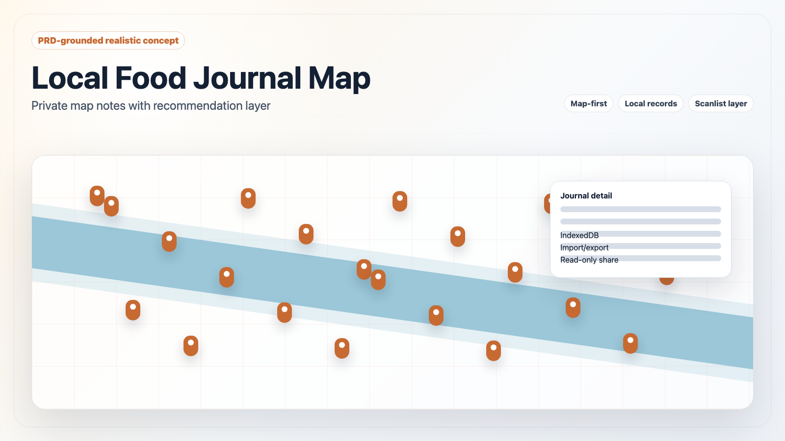
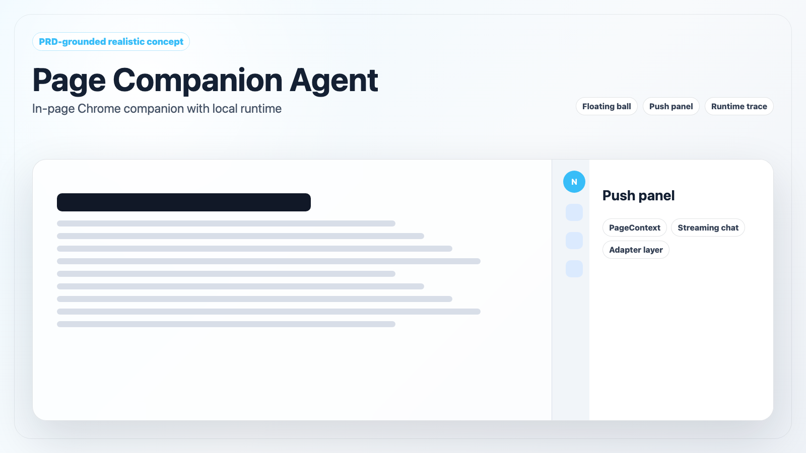
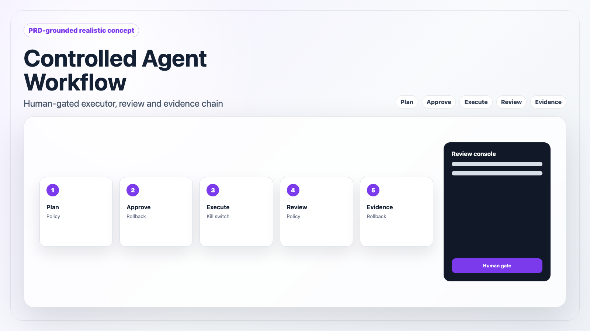
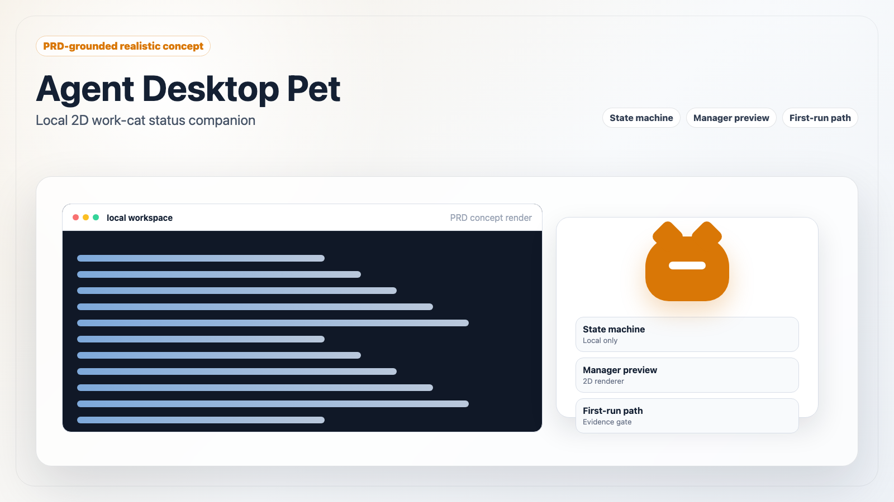
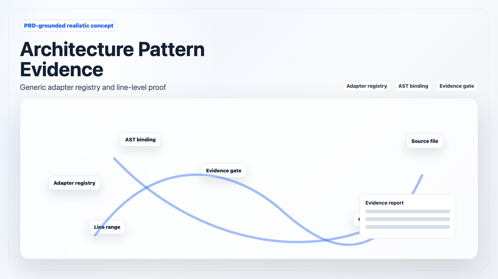
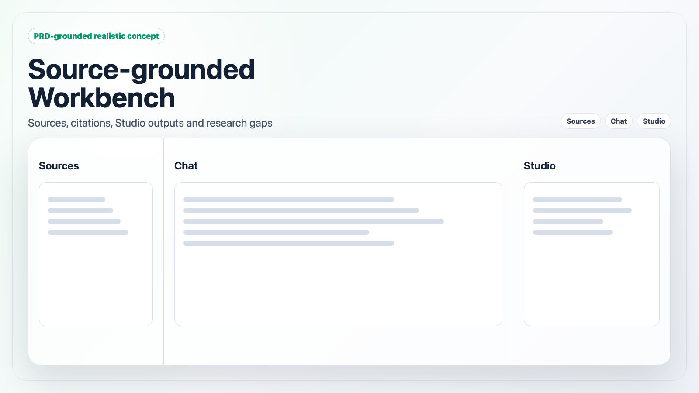
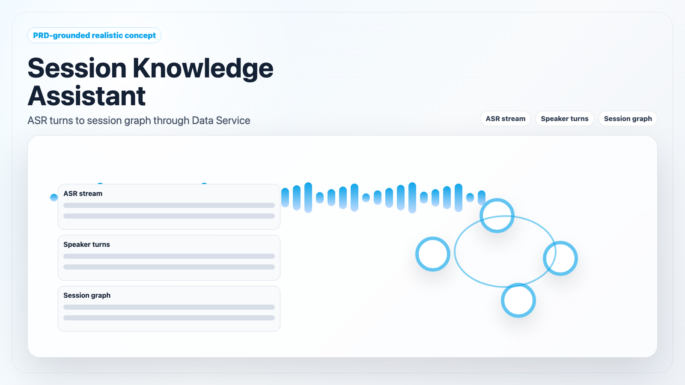

Docs-grounded project portal
面向宣讲的项目群入口
基于本地最新 docs、PRD 和验收报告重整 7 个项目：每个项目都有状态口径、可完成功能、规划路线、开发目标、应用前景和 PRD 拟真主图。
7项目详情页
拟真主图优先
PRD配图依据
边界禁止声明




项目入口
按当前状态筛选，每张卡片进入该项目的详细宣讲页。



PRD 拟真主图
这些图片用于宣讲视觉呈现，均为 PRD-grounded realistic concept，不作为真实截图证据。
codexPat拟真概念图 · PRD-grounded desktop companion concept
data_service拟真概念图 · PRD-grounded pattern evidence concept
harnessOS拟真概念图 · PRD-grounded controlled workflow concept
ResearchNotebook拟真概念图 · PRD-grounded source workbench concept
Meeting Voice拟真概念图 · PRD-grounded session knowledge concept
FoodMap拟真概念图 · PRD-grounded local food map concept
Navia拟真概念图 · PRD-grounded page companion concept
进展日志
本页后续继续记录资料、截图和配图更新。
升级为项目群入口
重写总入口与 7 个详情页，加入 PRD 来源、真实截图参考和禁止声明边界。
补充本地界面截图
使用 Playwright 抓取 FoodMap 和 ResearchNotebook 本地前端首屏，放入详情页作为参考。
切换为拟真主图优先
生成 7 张 PRD-grounded realistic concept PNG，替代容易误导的事实截图作为主视觉。